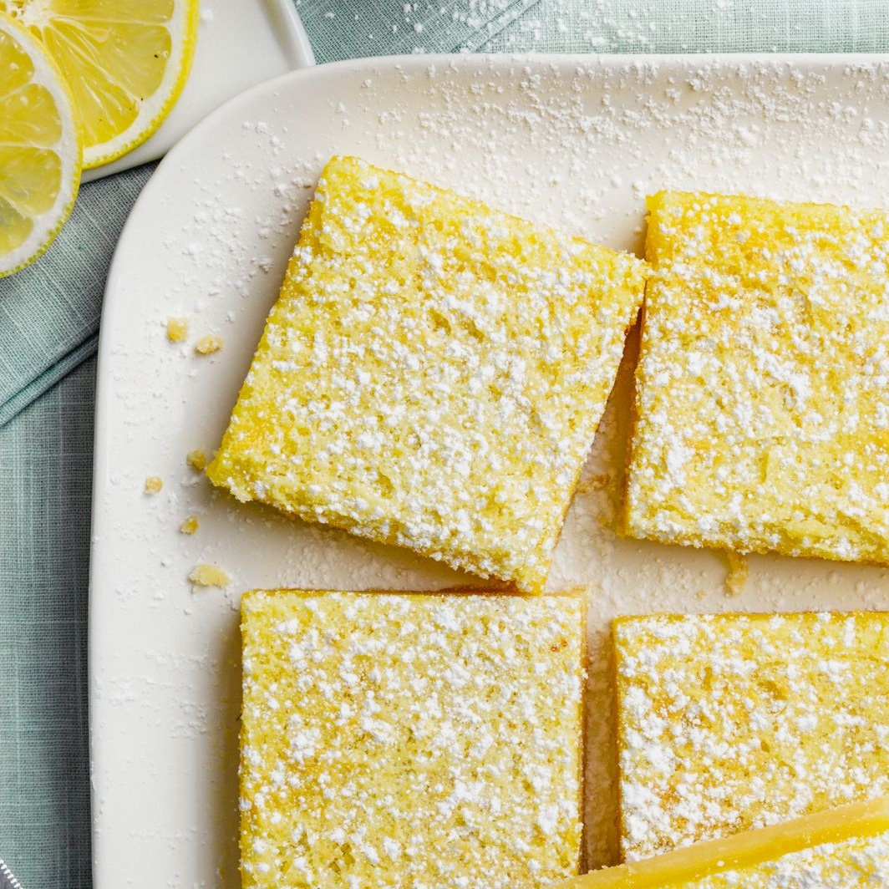

Lemon bars

Description
Tart, rich and perfection, all rolled into one! Wow your friends with this simple recipe.
Ingredients
- 1 cup butter, softened
- ½ cup white sugar
- 2 cups all-purpose flour
- 4 eggs
- ½ cups white sugar
- ¼ cup all-purpose flour
- 2 lemons, juiced
Steps
- Preheat oven to 350 degrees F (175 degrees C).
- In a medium bowl, blend together softened butter, 2 cups flour and 1/2 cup sugar.
- Press into the bottom of an ungreased 9x13 inch pan.
- Bake for 15 to 20 minutes in the preheated oven, or until firm and golden.
- In another bowl, whisk together the remaining 1 1/2 cups sugar and 1/4 cup flour.
- Whisk in the eggs and lemon juice.
- Pour over the baked crust.
- Bake for an additional 20 minutes in the preheated oven. The bars will firm up as they cool. .
- Wait for it to cool down before cutting into uniform 2 inch squares.